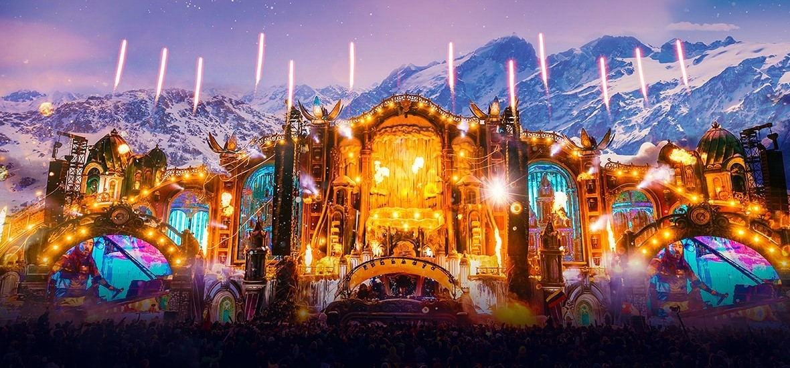
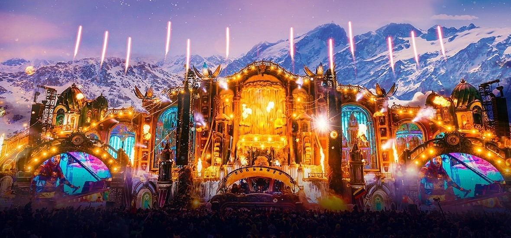

O festival de Inverno
O Tomorrowland Winter é a edição de inverno do mediático festival
de dança e ao longo de uma semana traz o já famigerado design de
palcos e sensacionais cartazes à pitoresca estância de Alpe d'Huez.
Tal como seria de esperar, no Tomorrowland não vão faltar alguns dos
maiores DJs do mundo de EDM, techno e house. A edição de 2019
contou com nomes como Afrojack, Charlotte de Witte, Kungs, Martin Garrix
e o favorito do Tomorrowland Armin Van Buuren.
O resort fica num planalto soalheiro e dispõem de várias pistas de ski para
principiantes e peritos. Aqueles que são aventureiros vão gostar de saber que
Alpe d'Huez é também a localização do Pic Blanc, o ponto de entrada da pista
de Sarenne, o mais longo "black run" dos Alpes. Não perca o que pode vir a ser
a melhor festa da sua vida...
Depois de uma primeira edição sensacional em 2019, o Tomorrowland Winter
teve que adiar a segunda edição duas vezes. Na verdade, as edições de 2020 e 2021
tiveram que ser adiadas por causa da pandemia.
 
